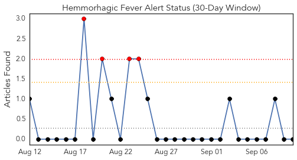
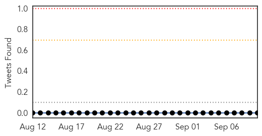
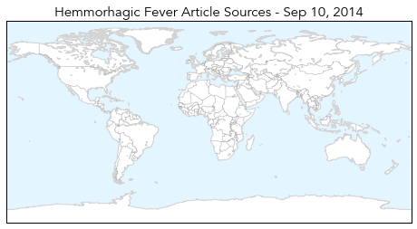
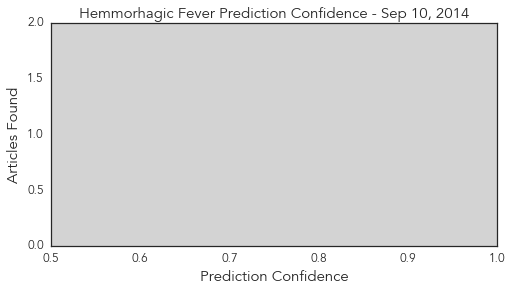
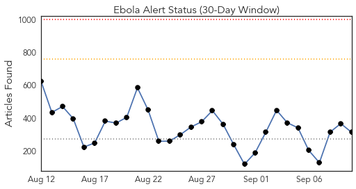
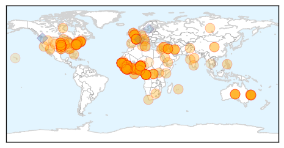
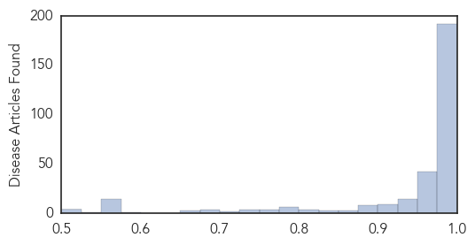

Hemmorhagic Fever
30-Day Web Trend
4 alerts, 0 warnings

30-Day Twitter Trend
0 alerts, 0 warnings

Article Locations
Article Confidences
Top Articles:
-
No articles found for Sep 10, 2014
Top Tweets:
-
No tweets found for Sep 10, 2014
Ebola
30-Day Web Trend
0 alerts, 0 warnings

30-Day Twitter Trend
1 alerts, 0 warnings

Article Locations
Article Confidences
Top Articles:
- 1.000
- With surge in Liberia, Ebola case toll rises above 4,200
- 1.000
- Ebola death toll rises by 200 in one day, reaches 2,296
- 1.000
- Ebola: health fears stop British journalist from hosting awards
- 1.000
- U.S. gives 5 ambulances to Sierra Leone
- 1.000
- International community's slow response to Ebola costing lives
- 1.000
- How to protect yourself against Ebola virus
- 1.000
- Gold Coast man isolated and assessed for Ebola has tested negative to the deadly virus
- 1.000
- Gold Coast man isolated and assessed for Ebola has tested negative to the deadly virus
- 1.000
- Suspected first case of Ebola in Italy
- 1.000
- Killer virus Ebola threatening Liberia’s existence · TheJournal.ie
- 1.000
- Ebola Patient in Nebraska Is Improving, Doctors Say
- 1.000
- Gold Coast Ebola: patient 'unlikely' to have virus
- 1.000
- Ebola ‘unlikely’ for WA man
- 1.000
- Ebola scare hits Australia
- 1.000
- Ebola outbreak 'threatens Liberia's national existence'
- 1.000
- Ebola kills 200 daily on average, reports WHO
- 1.000
- KSWO, Lawton, OK- Wichita Falls, TX: News, Weather, Sports. ABC, 24/7, Telemundo -
- 1.000
- Ebola outbreak: Dr Sam Brisbane was on the front line of the battle and had to choose between his own life, and that of his patients
- 1.000
- Gold Coast man isolated and assessed for Ebola has tested negative to the deadly virus
- 1.000
- Ebola unchecked in West Africa
- 1.000
- Ebola epidemic: Overall death toll tops 2,100 as Liberia set for 'huge surge'
- 1.000
- Liberia braces for worst as Ebola death toll jumps
- 1.000
- Delmarva schools on guard for Ebola
- 1.000
- Ebola seriously threatens Liberia's national existence: minister
- 1.000
- Ebola spreads exponentially in Liberia, many more cases soon-WHO
- 1.000
- Ebola map shows people in more African regions at risk of animal infection
- 1.000
- Gold Coast man who triggered a nation-wide Ebola alert has been CLEARED by Queensland Health
- 1.000
- Gold Coast man who triggered a nation-wide Ebola alert has been CLEARED by Queensland Health
- 1.000
- Ebola threatening Liberia's 'national existence' says defence minister
- 1.000
- With surge in Liberia, Ebola cases top 4,200
- 1.000
- WHO Says Ebola Outbreak Death Toll To Rise At 2,295 In West Africa
- 1.000
- Ebola Seriously Threatens Liberia's National Existence
- 1.000
- WHO warns that Liberia faces extinction by Ebola outbreak
- 1.000
- Canadian experts head back to Sierra Leone despite rising death toll
- 1.000
- Ebola Horror: How HAZMAT Suits Themselves Can Contaminate Medical Workers
- 1.000
- Beyond borders: Pakistan ready to battle Ebola threat
- 1.000
- The United States' Efforts To Help Combat Ebola Are Falling Short
- 1.000
- Ebola Outbreak: Lessons from the Hot Zone
- 1.000
- Thailand remains on high alert against Ebola
- 1.000
- Ebola threatens Liberia's existence
- 1.000
- Gates Foundation Gives $50M to Fight Ebola Outbreak in Africa
- 0.999
- Official: U.S. military’s response to Ebola hampered by lack of expertise with virus
- 0.999
- WHO: Liberia will see thousands of new Ebola cases
- 0.999
- Liberia president urges more international help fighting Ebola
- 0.999
- Ebola toll rises by 200 in 24 hours - Africa
- 0.999
- WHO Tells Liberia to Increase Hospital Beds for Ebola Patients
- 0.999
- Liberia president urges more international help fighting Ebola
- 0.999
- Ebola death toll rises to at least 2,296: WHO
- 0.999
- Ebola death toll skyrockets by almost 200 in one day
- 0.999
- Ebola what can we learn from the Ugandan experience? « Awoko Newspaper
Showing top 50 articles...
Top Tweets:
- 0.864
- Ebola virus disease case definition developed in response current outbreak is broad enough to apply to any EVD case http://t.co/uA4qURV6EH
- 0.641
- RT: The death toll in the worst Ebola outbreak in history has climbed to at least 2,296 in West Africa http://t.co/VHw0kQjJ…
- 0.563
- RT: @SueDHellmann Why are so many foreign health workers contracting ebola? Due to our understanding of transm. or poor protec…
- 0.548
- RT: .@SueDHellmann ebolachat - How can we encourage more transnational collaboration & coordination of this outbreak? Ebola knows …
- 0.540
- RT: Ebola à lire ce que dit et fait le Fonds mondial contre l'épidémie c'est dans notre : numéro 49 http://t.…
- 0.512
- RT: Ebola – the World’s Katrina http://t.co/jjELKqQF4l